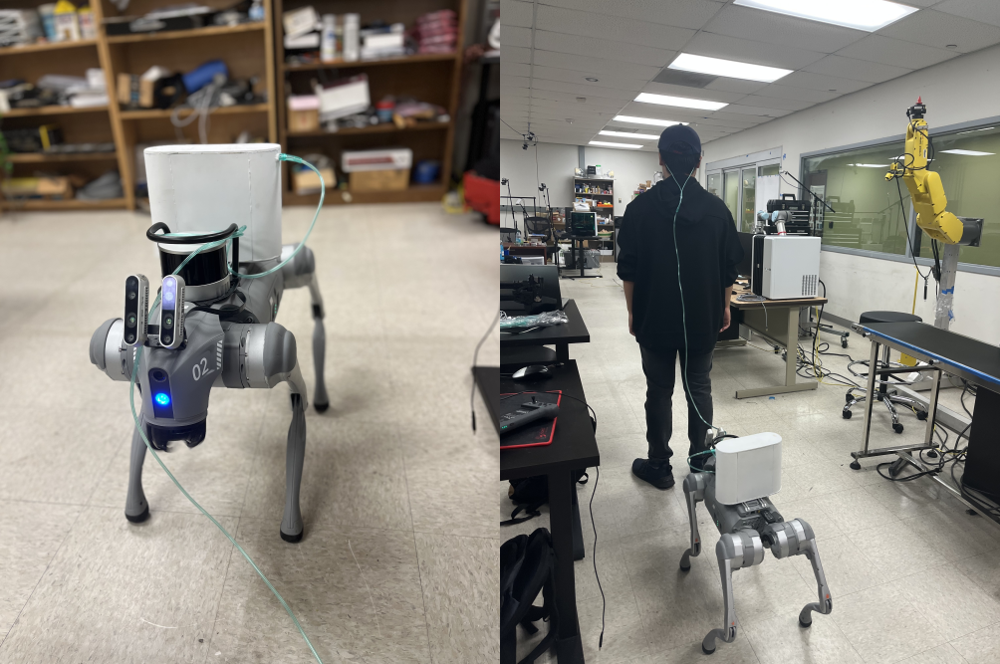

Related Work
Mobile Robotic Carriers for Oxygen Therapy
Early work emphasized mobile carts or walker-like carriers for transporting oxygen equipment. Iribe et al. developed a robotic cart with a two-DOF handle interface for home use, showing that reducing manual carrying effort encourages patients to walk longer distances. Kinugasa et al. explored robotic following in public spaces and demonstrated feasibility in outdoor settings. While these solutions reduce the physical burden of carrying oxygen cylinders, they leave the connecting tube unmanaged, exposing patients to potential entanglement and tripping risks.
Tethered Follower Robots
Bianchi et al. introduced a tethered follower robot for pulmonary rehabilitation that uses a cable tension sensor to follow patients during supervised sessions. Ohira et al. proposed a networked shuttle walking model to encourage exercise adherence. These approaches treat the tether primarily as a sensing modality rather than a controllable element. Active cable regulation—maintaining appropriate slack and preventing hazards—remains largely unexplored.
Rehabilitation-Oriented Assistive Robotics
Other researchers have investigated robot-assisted gait training and autonomous follower systems for rehabilitation [link]. These platforms typically operate in controlled environments and focus on path following and patient tracking rather than handling a deformable connection such as an oxygen tube. Cable routing, slack regulation, and patient interaction with furniture or cluttered home environments are generally not considered
Cable Manipulation and Human-Robot Interaction
Cable and hose manipulation has become an active benchmark problem in robotics, with approaches ranging from reinforcement learning for routing and knot tying [link], [link] to vision-based threading [link] and planning-based methods for constrained routing [link]. Other studies leverage simulationto-real transfer for tasks like insertion and untangling [18]. However, most methods assume static endpoints or fully known workspaces, and few involve a human actively moving one end of the cable. These methods are optimized for task completion rather than continuous slack management in dynamic scenarios.
Motivation and Gap
From the literature, three key gaps remain: (1) oxygen tube slack is rarely treated as a controllable variable, (2) few systems integrate multi-modal perception (vision + LiDAR) for robust tracking in unstructured home-like spaces, and (3) predictive adjustment of cable slack to anticipate human motion has not been studied. Our proposed system aims to address these gaps by combining wide-field RGB-D perception, real-time patient tracking, obstacle-aware cable routing, and predictive slack regulation using a mobile quadruped platform equipped with a hook-shaped gripper.